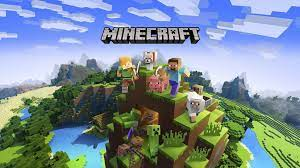

MINECRAFT

Minecraft is a sandbox game developed by Mojang Studios. The game was created by Markus "Notch" Persson in the Java programming language. Following several early private testing versions, it was first made public in May 2009 before being fully released in November 2011, with Notch stepping down and Jens "Jeb" Bergensten taking over development. Minecraft is the best-selling video game of all time, with over 238 million copies sold and nearly 140 million monthly active players as of 2021, and has been ported to several platforms. In Minecraft, players explore a blocky, procedurally generated 3D world with virtually infinite terrain and may discover and extract raw materials, craft tools and items, and build structures, earthworks, and simple machines. Depending on their chosen game mode, players can fight hostile mobs, as well as cooperate with or compete against other players in the same world. Game modes include a survival mode (in which players must acquire resources to build in the world and maintain health) and a creative mode (where players have unlimited resources and access to flight). There is also a wide variety of user-generated content, such as modifications, servers, skins, texture packs, and custom maps, which add new game mechanics and possibilities. Minecraft is a 3D sandbox game that has no required goals to accomplish, allowing players a large amount of freedom in choosing how to play the game. However, there is an achievement system, known as "advancements" in the Java Edition of the game, and "trophies" on the PlayStation ports.The game world is composed of rough 3D objects—mainly cubes and fluids, and commonly called "blocks"—representing various materials, such as dirt, stone, ores, tree trunks, water, and lava. The core gameplay revolves around picking up and placing these objects. These blocks are arranged in a 3D grid, while players can move freely around the world. Players can "mine" blocks and then place them elsewhere, enabling them to build things.
Minecraft has two alternative dimensions besides the Overworld (the main world): the Nether and the End. The Nether is a hell-like underworld dimension accessed via player-built obsidian portals; it contains many unique resources and can be used to travel great distances in the Overworld, due to every block traveled in the Nether being equivalent to 8 blocks traveled in the Overworld. Water cannot exist in the Nether, as it will vaporize instantly. The Nether is mainly populated by pigman-like mobs called piglins and their zombified counterparts, plus floating balloon-like mobs called ghasts. The player can also build an optional boss mob called The Wither out of materials found in the Nether. The End is reached by underground portals in the Overworld. It consists of islands floating above a dark, endless void. A boss dragon called the Ender Dragon guards the largest, central island. Killing the dragon opens access to an exit portal, which upon entering cues the game's ending credits and a poem written by Irish novelist Julian Gough. Players are then teleported back to their respawn point and may continue the game indefinitely.
Download link:-https://play.google.com/store/apps/details?id=com.mojang.minecraftpe&hl=en_IN&gl=US
Home
Next page